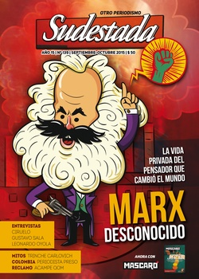

Buscar
Marx desconocido
Además del teórico de la revolución, del intelectual que desnudó las miserias del capitalismo, hay otro Marx. El joven que dilapidó la fortuna familiar, se batió a duelo y anduvo de juerga, el enamorado que le dedicaba poemas a su novia, el militante político que portaba armas y humillaba a sus adversarios con su estilo agresivo, el escritor de las mil excusas para no cumplir los plazos de entrega y que demoró 16 años en terminar su obra maestra, el hombre que padeció el exilio y la pobreza, que vivió endeudado y acosado por los acreedores, el padre afectuoso que vio morir a cuatro de sus hijos por enfermedades propias de la miseria. "Amor y Capital", el extraordinario libro de Mary Gabriel (inédito aún en la Argentina), se ocupa justamente de la historia de ese Marx desconocido. Además, opinan Néstor Kohan y Facundo Nahuel Martín.
Edición N° 139
Septiembre-octubre 2015
Revista bimensual
Comprar edición impresaSumario
- Marx desconocido
- La ñata contra el vidrio
- Trinche Carlovich. Anatomía de un mito
- Gustavo Sala: "Por suerte, la maldad sigue siendo necesaria"
- Luciana Mocchi: "La música me salvó la vida"
- Acampe Qom. El regreso del malón de la paz
- Un periodista preso. Los sospechosos de siempre
- Ciruelo: "En la naturaleza todo es magia"
- Leonardo Oyola: Es muy fácil perderte mientras estás en un universo de ficción"
- Néstor Favre-Mossier: "No puedo pintar desde la teoría"
Compartir Articulo
1. La densa niebla hace del sol de mediodía una fantasía de poeta trasnochado. En esa espesa cortina húmeda, no hay manera de caminar por los sombríos callejones del barrio del Soho sin terminar con los zapatos embarrados: las calles son un lodazal, mezcla de bosta de caballo con deshechos de todo tipo. Hasta respirar parece un desafío para el caminante: un vapor fétido se desprende de esa cloaca al aire libre llamada Támesis, a causa del rudimentario sistema de alcantarillado. En los márgenes del río londinense, las tabernas explotan de agitadores que gritan consignas en todos los idiomas; refugiados políticos que vienen escapando de la derrota en su lucha desigual contra monarcas, hambrientos revolucionarios que no tiene dónde caerse muertos y que le hacen pagar una cerveza a cualquier activista que sueña con financiar a su conspirativo grupo en ese antro de pobreza y desesperación.
No muy lejos de allí, en el 64 de Dean Street, más precisamente en el tercer piso, en una pequeña buhardilla de dos piezas, un exiliado prusiano respira el humo del cigarro más barato de todo Londres, mientras intenta concentrarse en la escritura entre gritos y risas infantiles. Sobre la misma mesa en la que apoya su cuaderno de notas, se desparraman juguetes, tazas rotas, ropa para coser, y a su alrededor un ejército de niños se oculta tras las puertas, corre por los rincones, inventa un juego que consiste en atar a su padre a la silla, y acomodarse detrás suyo, como una suerte de carro de diligencia tirado por un caballo llamado Karl Marx, caballo que deben azotar de vez en cuando para aligerar el paso imaginado. "Varios capítulos del Dieciocho Brumario los escribió realmente mientras participaba en esa carrera de obstáculos a la que le sometíamos sus tres hijos pequeños", anotaría años después Laura, una de sus hijas. Ese caos diurno y las presiones para terminar el trabajo lo antes posible lo obligan a quedarse escribiendo hasta la madrugada, bajo la tenue luz de una lámpara de aceite, y más de una vez amanece dormido en un sillón mientras, en torno a él, el bullicio de la vida doméstica parece incapaz de importunar su pesado sueño.
El hombre que desnudó las miserias del naciente capitalismo, aquel que defendía la premisa de que ningún hombre tenía el derecho de enriquecerse sobre la base de la explotación de otros hombres, el que imaginaba una sociedad sin clases y alentaba la revolución proletaria en todo el mundo, el demonio temido y calumniado por la burguesía durante siglos, vivía en una pieza de alquiler con muebles rotos, ropa húmeda colgada en las ventanas, una alfombra gastada de tanta caminata y sin una moneda para alimentar a su familia. Su esposa Jenny apenas sale a la calle para viajar rumbo a la casa de empeños con la vajilla de plata, la mantelería o hasta sus propios zapatos, ante el acoso de los acreedores. "Hace una semana llegué al punto en que ya no puedo salir de casa porque tengo todas las levitas empeñadas, ni puedo comer carne por falta de crédito", admite Marx en una carta. Perseguido hasta por el médico, que exige el pago de sus servicios, no puede salir a la calle, o lo hace disfrazado, para despistar a quienes pretenden "desplumarlo". Y sin embargo, pese a todas las penurias, están unidos y festejan la oportunidad de contar con un proyecto para poner el mundo patas para arriba. "Pocas veces he conocido un matrimonio tan feliz –definió un visitante asiduo a la casa–, en el que la alegría y el sufrimiento fueran tan compartidos, y las penas superadas con la conciencia de una mutua y total dependencia".
La casa del Moro, como lo apodan, es además el lugar de encuentro preferido para bohemios y fugitivos que buscan mitigar el hambre y las heridas de un pasado de guerra contra monarcas y patrones, que discuten apasionadamente durante horas mientras el humo de sus pipas invade la casa y enseñan a los hijos de Marx viejas canciones que hablan de barricadas y de obreros en armas. Por esa razón, no es complicado imaginar que, entre la multitud de refugiados que visitan la guarida del Moro cada día, pueda infiltrarse un espía policial. Lo que sí es extraño es que el mejor retrato sobre aquellos días en el Soho lo escriba uno de estos agentes policiales: "Lleva una existencia de intelectual bohemio. Lavarse, arreglarse y cambiar las sábanas no son cosas que haga muy a menudo, y le gusta emborracharse". El mismo espía, más adelante, detalla: "Es el más dulce y afable de los hombres… Vive en uno de los peores barrios de Londres. En todo el apartamento no hay ni un solo mueble sólido y en condiciones. Todo está roto y andrajoso, con un dedo de polvo en todas partes y el mayor de los desórdenes. En medio de la sala de estar hay una mesa grande y pasada de moda, cubierta con un pedazo de hule, sobre la cual están sus manuscritos, sus libros y periódicos, y también los juguetes de los niños, y retales del costurero de su esposa, varias tazas con los bordes mellados, cuchillos, tenedores, lámparas, un tintero, vasos de whisky, pipas de cerámica, ceniza de puro, etc… Sentarse se convierte en una cosa peligrosa. Una de las sillas solo tiene tres patas, en otra los niños juegan a cocinar; esta última parece tener cuatro patas y es la que suele ofrecerse a las visitas pero los restos del juego de los niños no se han retirado, y si uno se sienta en ella, puede echar a perder sus pantalones"...
(La nota completa en la edición gráfica de Sudestada)
Comentarios
Hugo Montero
Articulos más vistos


LIBRERÍA SUDESTADA

Colección infantil

Distribuidora de Libros

Suscripción

Sudestada en URUGUAY

Otros articulos de esta edición
Luciana Mocchi: "La música me salvó la vida"
A los 25 años, la cantautora de Montevideo Luciana Mocchi avanza en varios planos y sigue atrapando a nuevos oídos ...
 ¡La hora, referí!
¡La hora, referí!
Trinche Carlovich. Anatomía de un mito
En los años setenta, por los tablones rosarinos corría un rumor. Así, de a poco, se fue armando la leyenda ...
Acampe Qom. El regreso del malón de la paz
El reclamo qom, que ya lleva casi 200 días de acampe en pleno centro porteño, no se relaciona con la ...
 Diez Preguntas
Diez Preguntas
Ciruelo: "En la naturaleza todo es magia"
Gustavo Cabral (Ciruelo) es un artista argentino muy reconocido en el ambiente de los cómics y la literatura fantástica de ...
 A fondo
A fondo
Gustavo Sala: "Por suerte, la maldad sigue siendo necesaria"
Provoca, incomoda y hace reír. El humor de Gustavo Sala rompe con todo y le pega una patada al tablero ...
La ñata contra el vidrio
Están los que dominan el show electoral y desde lo alto de la rosca nos iluminan y dicen: la política ...